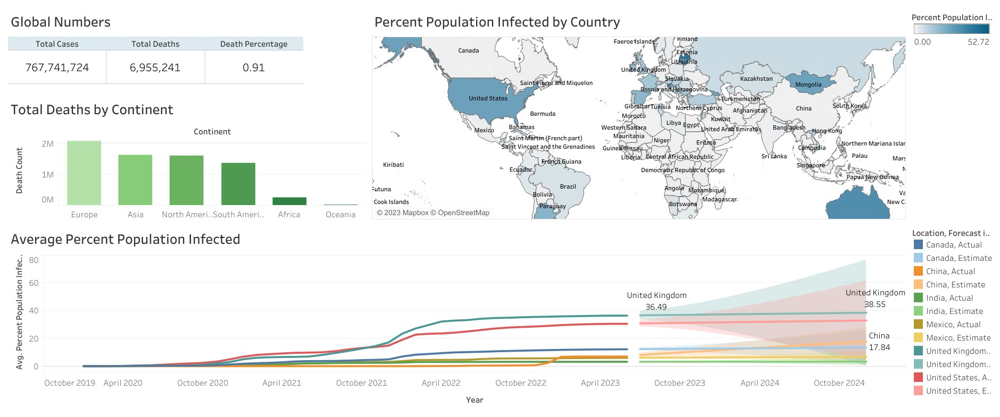
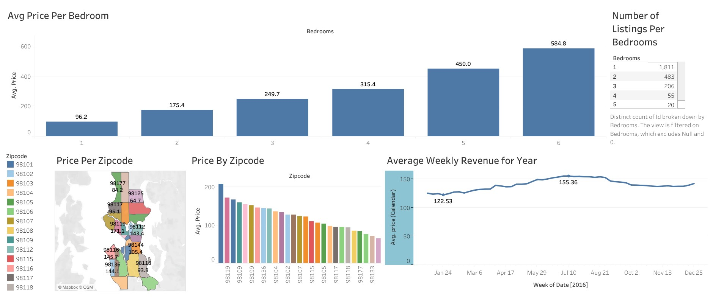
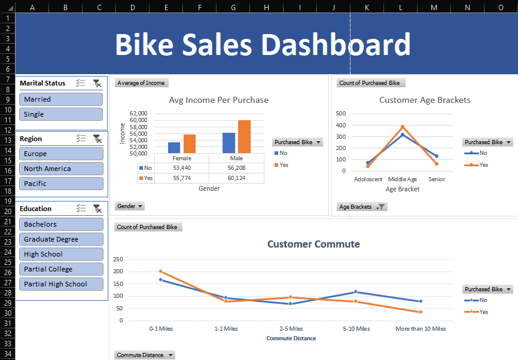
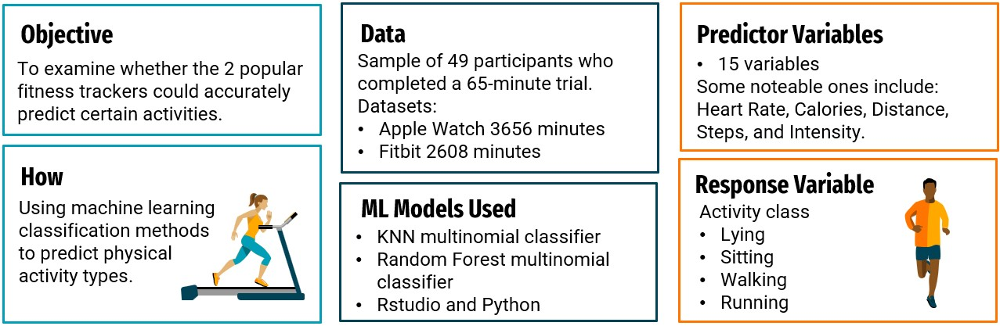
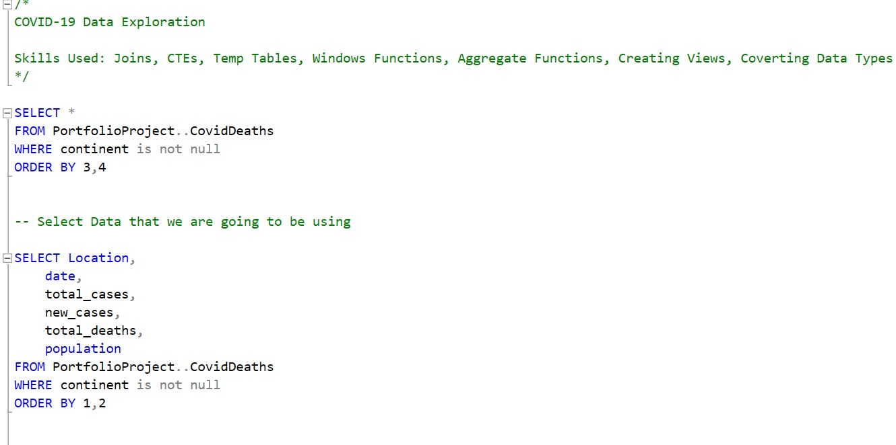

Conducted thorough data exploration and analysis of COVID-19 data utilizing SQL techniques like joins, CTEs, and aggregate functions.
Developed an interactive Tableau dashboard, incorporating visualizations and filters, to present key insights and trends from the COVID-19 data, encompassing global and regional statistics, vaccination rates, and population impact.


Through the creation of an interactive Tableau dashboard, this project offers a comprehensive analysis of Seattle's Airbnb market, highlighting average listing prices, occupancy rates, and popular neighborhoods. The dashboard provides valuable insights to potential hosts, guiding them in making informed decisions regarding property selection, optimal pricing, and timing to maximize profitability within the Seattle Airbnb market.

This project utilizes Excel's features to create an interactive dashboard for bike sales data analysis, providing a user-friendly interface with visualizations and summary statistics for key insights and decision-making. The sales data was cleaned and organized for accuracy, focusing on key customer metrics that have a significant impact on bike sales.

Performed comprehensive statistical data analysis to compare the performance of Apple Watch and Fitbit fitness trackers, revealing valuable insights and uncovering patterns. Developed and implemented statistical machine learning models in R and Python, achieving an impressive accuracy rate of 86%.

Using SQL for data analysis, including common features such as data extraction, transformation, querying, joins, aggregations, statistical functions, subqueries, performance optimization, and documentation.